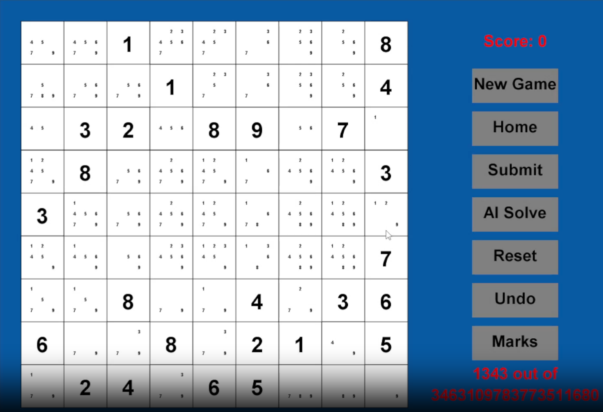

Gabriel Gibb
likes to make things
I am a dedicated student at UCI on the verge of graduation with a passion for coding.
Eager to explore new opportunities and continuously expand my skill set, I have a relentless drive to learn and create.
With a constant itch to code, I thrive on developing innovative projects and embracing the world of technology.
Valdle is a dynamic Valorant trivia website designed to challenge players' knowledge of the game through multiple unique and fun gamemodes.
Through this project, I led a team, adopted agile development, and improved my coding skills, particularly in fullstack web development and interacting with APIs. It emphasized the value of user feedback, resulting in a user-centric and engaging platform for Valorant enthusiasts.

Fablix, a quarter-long endeavor completed at UCI, delved into databases and web applications.
Fablix offers users the ability to interact with a movie database, enabling searches by criteria such as movie name and genre, viewing actor information,
and even adding new movies to the database.
This comprehensive project served as my introduction to full stack web development. I was responsible for creating webpages using HTML and JavaScript, connecting to databases using MySQL, and serving data to a frontend using Java. The entire system was hosted on AWS.
RankBot is a dynamic Discord bot that provides real-time updates on ranked wins and losses in League of Legends and Valorant.
Operating with 100% uptime in my Discord server, it offers my friends and me the opportunity to stay connected and share in each other's victories and defeats, even when we're not playing games together.
This project not only introduced me to the world of Discord bots but also taught me valuable lessons in maintaining uptime, automating processes, and coding in Python. It's been an inspiring experience, boosting my confidence in building practical tools that people actively use and enjoy.
As part of my teaching efforts, I created a Badminton Video Analyzer, a tool designed to enhance a student's understanding of the game.
This application utilized Python and OpenCV to process badminton videos, identifying and outlining the court and players through computer vision.
The tool then displayed these detected elements on a separate screen to track player movement.
This project served as an excellent introduction to Python and OpenCV for computer vision, demonstrating my commitment to innovative teaching techniques and programming skills.
In collaboration with a fellow student at my job, where I teach coding to children, we developed a sophisticated desktop Sudoku application in Java.
This app goes beyond the basics, offering features like level generation, pencil marks, and even an AI solver.
Guiding a student through this complex project was a rewarding experience, requiring extensive peer programming and mentorship. This project exemplifies my commitment to both coding education and tackling intricate programming challenges.
I created two classic browser games, Minesweeper and Tetris, which marked my initial foray into web development and independent project creation.
These games served as a departure from traditional terminal-based school projects, igniting my passion for coding.
They provided invaluable hands-on learning experiences, reinforcing my skills and fostering my excitement for programming through the challenges of building interactive web applications.
At Coding Minds Academy, I embarked on a fulfilling journey of teaching coding to students of all ages, honing both my teaching and coding skills.
I often crafted my own curriculum and learned to effectively communicate intricate coding concepts to kids.
Project-based learning was a cornerstone of my teaching approach,
requiring me to adapt and learn new programming languages and frameworks regularly to present increasingly complex projects tailored to students with varying skill levels.
This experience significantly enriched my understanding of teaching, coding, and the art of rapid learning.


About Me
Some Of My Skills
Javascript
Python
HTML
CSS
Java
MySQL
Git
Github
AWS
Google Cloud
Node.js
Flask
jQuery
Projects
Valdle
Summer 2023
Valorant Trivia Website
Javascript
Python
HTML
CSS
Flask
jQuery
Render
Through this project, I led a team, adopted agile development, and improved my coding skills, particularly in fullstack web development and interacting with APIs. It emphasized the value of user feedback, resulting in a user-centric and engaging platform for Valorant enthusiasts.
Fablix
Spring 2023
Full Stack Movie Database Website
Javascript
Java
HTML
AWS
Google Cloud
MySQL
Tomcat
jQuery
JDBC
Jakarta Servlet
This comprehensive project served as my introduction to full stack web development. I was responsible for creating webpages using HTML and JavaScript, connecting to databases using MySQL, and serving data to a frontend using Java. The entire system was hosted on AWS.
Rankbot
Winter 2022
Discord Game Stats Bot
Python
Discord.py
Heroku
This project not only introduced me to the world of Discord bots but also taught me valuable lessons in maintaining uptime, automating processes, and coding in Python. It's been an inspiring experience, boosting my confidence in building practical tools that people actively use and enjoy.
Links:
Github
Badminton Video Analyzer
Fall 2022
Tracking Badminton Videos Using Computer Vision
Python
OpenCV
Flask
PyTorch
This project served as an excellent introduction to Python and OpenCV for computer vision, demonstrating my commitment to innovative teaching techniques and programming skills.
Links:
Github
Sudoku
Fall 2022
Desktop Sudoku App - Collaborative Teaching Project
Java
StdDraw
Guiding a student through this complex project was a rewarding experience, requiring extensive peer programming and mentorship. This project exemplifies my commitment to both coding education and tackling intricate programming challenges.
Links:
Github

Browser Games
Summer 2022
Tetris and Minesweeper On The Web
Javascript
HTML
Experience
Coding Minds Academy
Summer 2022 - Spring 2023
Coding Instructor
gabrielgibb1@gmail.com
Gabriel Gibb